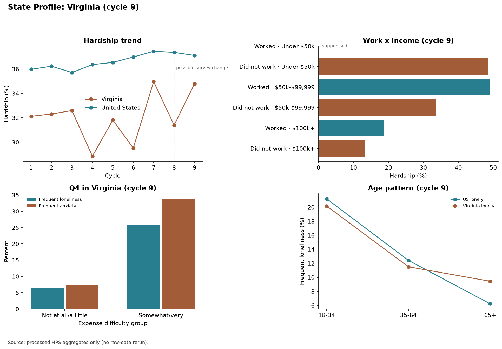
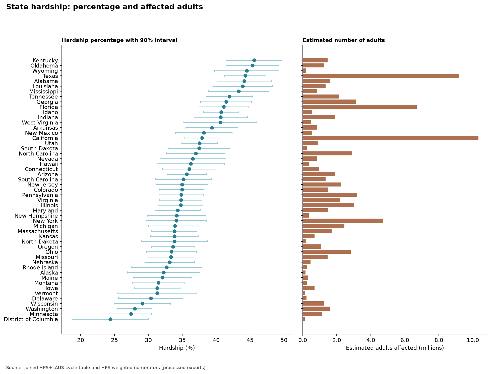
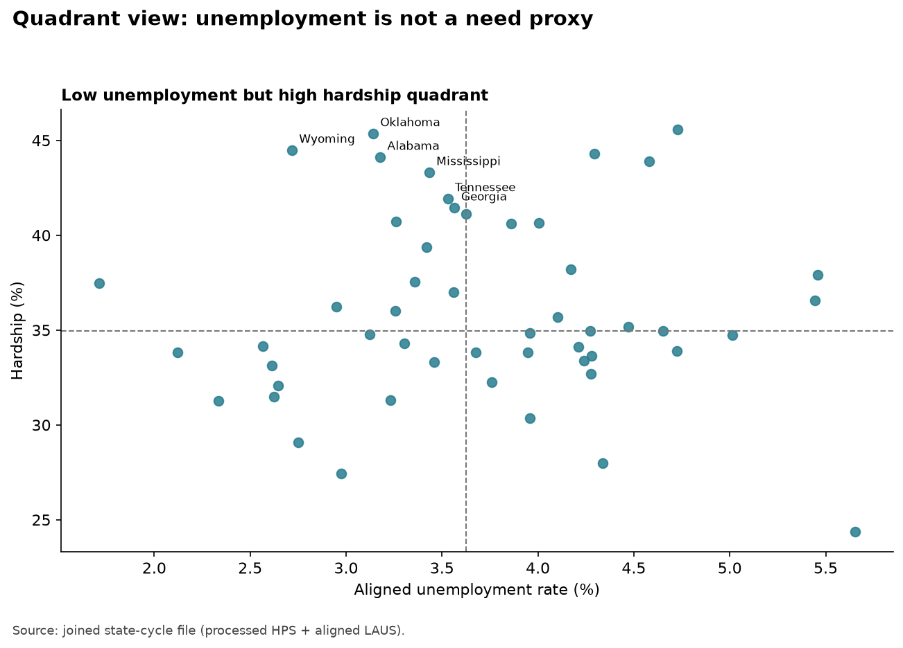
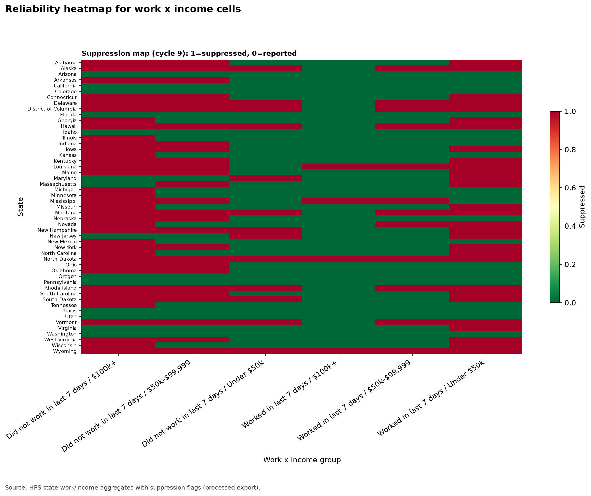

Persona-focused state profile: Virginia
Recovery status: above 2019 (2019 to 2024 change: +0.1 pp).
Labor force change: +3.3%, employment change: +3.2%.
State profile

Hardship percent and count

Unemployment-hardship quadrant

Reliability map

Notes
- All outputs use already-processed CSV exports only.
- No raw respondent data or new downloads were required.
- Cycle 8 is marked as a possible survey-change point; cause is not confirmed in this file.